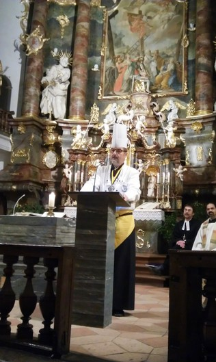
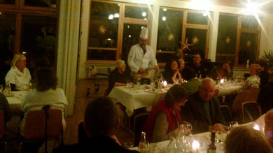

Berichte 2013

Club der Köche Oberschwabens
Danken und Ehren!
Sehr geehrte Damen und Herren, liebe Köchinnen und Köche, wir freuen uns, dass Sie mit uns und dem Club der Köche Oberschwabens den Dankgottesdienst hier in der Wallfahrtskirche Steinhausen begehen. In dieser Stunde werden Sie unsere Gäste sein und Sie sollen beides, unsere Gastfreundschaft und die Menschlichkeit Gottes spüren.
Mit diesen Worten wurden alle Kirchenbesucher bei der diesjährigen Dankfeier in Steinhausen auf dem ausliegenden Programm willkommen geheißen. Nach dem musikalischen Auftakt des Chors „Voice It“ aus Burgrieden unter der Leitung von Jochen Ruß mit dem Lied „One Moment in Time“ begrüßte der Hausherr Pfarrer Babu alle Gäste aufs herzlichste. Vikar Barzik aus Bad Schussenried stellte in seiner Ansprache mit Texten aus dem Alten Testament ein schwäbisches Nationalgericht zusammen. Herr Pfarrer Maile, ebenfalls aus Bad Schussenried, als evangelischer Mitbruder dieser ökumenischen Dankfeier, lies beim Totengedenken die gesamte Gemeinde mitgestalten. Mit den Worten: „Grüezi miteanand… ond Guetzli usem Chochichästli “begann der Vorsitzende des Clubs der Köche Oberschwabens Wolfgang Müller aus Heiligkreuztal seine Grußworte. Wir Köchinnen und Köche, so fuhr er fort, danken für die Gaben, die wir täglich verwenden, um ein köstliches Essen bereiten zu können. Wir denken daran, wie viel menschliche Arbeit dazu gehört und wie viele Kräfte der Natur, bis wir die Gaben zubereiten, backen kochen und braten. Wir würdigen die Nahrungsmittel, denken an unsere Gäste, für die wir das Essen bereiten und so bleibt jedes Essen kostbar. Der Dank sollte sich jedoch nicht nur auf einen Tag beschränken, denn Denken und Danken gehören zusammen. Man kann den Weg vom Herzen zum Kopf auch ohne Landkarte finden. Dann lud er die gesamten Besucher zu einer heißen Tasse Suppe ein.
Bei der anschließenden Jahresabschlussfeier im Landgasthof Linde, bei Kollege Bernd Heinzelmann, konnte Müller auf ein ereignisreiches Vereinsleben in vergangenen Jahr zurückblicken: Am 20. Januar beim Preiskegeln in Bad Schussenried begrüßte er bei Kollege Hubert Härle über 20 Mitglieder. Am 17. April 2013 trafen sich die Mitglieder im Berufsbildungswerk Ravensburg bei Kollege Eberhard Dirk unter dem Motto „Senioren erzählen“ zu einem gemütlichen Nachmittag. Bei den Spargelschälaktionen am Samstag vor Muttertag, gleichzeitig in Biberach, Bad Waldsee und Bad Saulgau, konnten zusammen ca. 1000.--€ jeweils für einen guten Zweck in der Region gespendet werden. Von 24. auf 25.05. 2013 konnten ca. 10 Mitglieder in Ehestetten bei Kollege Simon Tress an einem hervorragenden Fachseminar tätig werden. Zwei wunderschöne erlebnisreiche Tage verbrachten die Mitglieder mit Familien beim Hüttenzauber in Obermeiselstein. Diese werden für alle Beteiligten noch lange in Erinnerung bleiben. Den Grillnachmittag mit Kartenvorverkauf richteten am 06. Juli die Kollegen aus Bad Waldsee am Flugplatz in Reute / Bad Waldsee aus. Mit einem Quiz und tollen Preisen wurde der Nachmittag noch interessanter. Am Laurentiustag in Roggenzell (Neu-Ravensburg) waren die Köche Oberswabens zu Ehren des Schutzpatrons zahlreich vertreten. Der diesjährige Kochball in Bad Buchau im großen Saal des Kurzentrums zum Motto „Grüezi miteanand… ond Guetzli usem Chochichästli “war Dank aller Kolleginnen und Kollegen und einer gelungenen Organisation der Vorstandschaft ein voller Erfolg. Nach einem köstlichen Gans-Essen bei Bernd Heinzelmann wurde Heribert Reinke mit der goldenen Vereinsnadel für 20 Jahre ausgezeichnet. Wolfgang Müller bedankte sich bei seiner gesamten Vorstandschaft für die sehr gute und harmonische Zusammenarbeit mit einem kleinen Präsent. Zum Schluss erinnerte der Vorsitzende an die in diesem Jahr noch stattfindende Veranstaltung am Hl. Abend in Riedlingen. Der Club der Köche Oberschwabens lädt alle Bürgerinnen und Bürger von Riedlingen und Umgebung, welche sich am Hl. Abend einsam und allein fühlen, zu einem gemeinsamen Weihnachtsmenü ein. Die Köche möchten damit zum Weihnachtsfest eine Freude bereiten.
